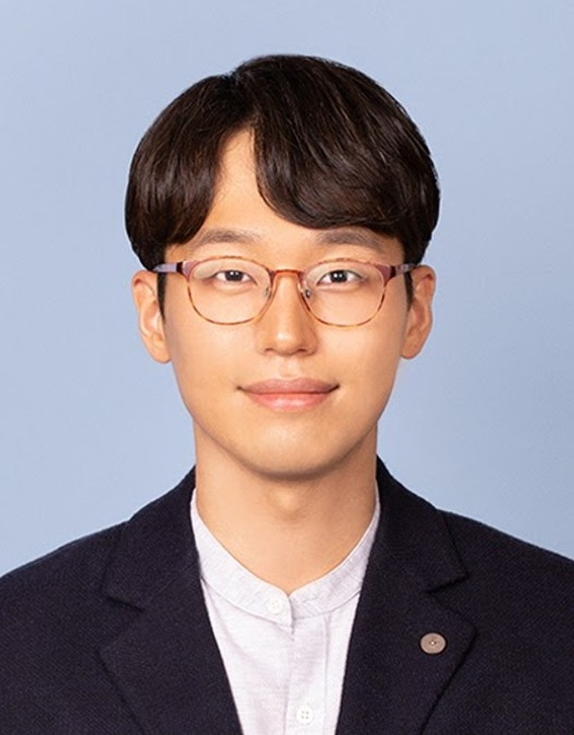
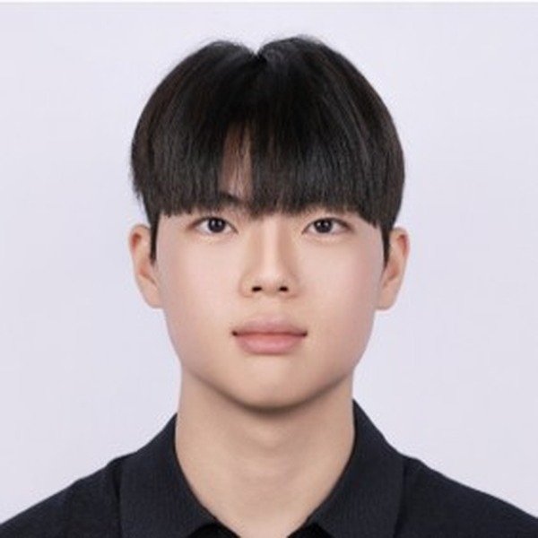
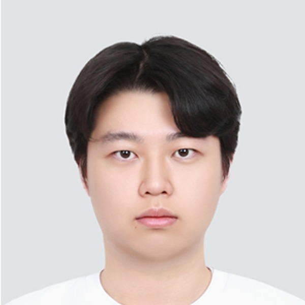

Sanghoon Jeon
전상훈, Assistant Professor, Dept. of Information Security
College of Intelligent SW Convergence, The University of Suwon
He received his B.E. degree in Electronic Engineering from Kyungpook National University in 2012, and his M.E. and Ph.D. degrees from the Department of Information and Communication Engineering at DGIST in 2014 and 2020. He served as a Senior Researcher at Hanyang University's Industry-University Cooperation Foundation, then as a Postdoctoral Researcher and Research Assistant Professor in the Department of Emergency Medicine. Since October 2023 he has been an Assistant Professor at The University of Suwon. His research focuses on healthcare applications using wearable computing and cyber-physical systems.
Research interests
Wearable Computing, Healthcare & IoT Applications, Edge Computing, Artificial Intelligence of Things, Embedded Systems, Cyber-Physical Systems, Information Security
Education
- 2014.03 – 2020.08Doctor of Philosophy (Ph.D.) in Department of Information and Communication Engineering, DGISTDissertation: “AI-based Human-in-the-loop Cyber Physical Systems in Healthcare Applications”Advisor: Sang Hyuk Son
- 2012.03 – 2014.02Master of Engineering (M.E.) in Department of Information and Communication Engineering, DGISTMaster’s Thesis: “Development of Rehabilitation Applications by Using Wearable Sensors”Co-Advisors: Taejoon Park, Sang Hyuk Son
- 2006.03 – 2012.02Bachelor of Engineering (B.E.) in School of Electronic Engineering, Kyungpook National UniversityMajor: Information and Communication Engineering
Professional experience
- 2023.10 – presentAssistant Professor, Dept. of Information Security, The University of Suwon
- 2022.10 – 2023.09Assistant Research Professor, Dept. of Emergency Medicine, Hanyang University
- 2020.09 – 2022.09Postdoctoral Research Fellow, Dept. of Emergency Medicine, Hanyang University
- 2020.03 – 2020.08Senior Researcher, Industry-University Cooperation Foundation, Hanyang University
- 2015.03 – 2017.08Visiting Student Researcher, HumanLab, DGIST
Scholarships & awards
- 2025Excellence in Education Award, The University of Suwon
- 2022Participation Award (Business Track), 7th Digital Health Hackathon
- 2020, 2021Runner-up prize, Innovation Awards, Hanyang University
- 2019MobiSys Student Travel Grant
- 2015Best Paper Award, Korean Society of Embedded Engineering Fall Conference
- M.E. / Ph.D.DGIST Graduate School Scholarship (full tuition)
- B.E.National Science & Technology Scholarship, Kyungpook National University (full tuition, four years)
Professional services
- PC Member, 27th World Conference on Information Security Applications (WISA'26)
- PC Member, 2026 Supply Chain Security Workshop
- PC Member, Conference on Information Security and Cryptology Summer 2026 (CISC-S'26)
- Reviewer, Korea Institute of Information Security and Cryptology (KIISC), 2025 – present
- Reviewer, IEEE Transactions on Cybernetics, 2024
- Judge, Embedded SW Competition, 2024 – present
- Invited Speaker, ICTC 2024
Current researchers
Nuclear Security Research Team
–
Deepfake Research Team
–
HBOM–PUF Research Team
–Internship. Students interested in lab internships are encouraged to get in touch by e-mail.
– past researchers
- Jaeyong Lee 이재용, 2026.01–2026.06
- Junwon Lee 이준원, 2026.01–2026.06
- JaeUk Jo 조재욱, 2026.01–2026.06
- Jaeyoon Lee 이재윤, 2026.01–2026.06
- Hyeok Bang 방혁, 2024.01–2025.12
- Haneul Lee 이하늘, 2025.01–2025.12
- Yeon-Kyung Seo 서연경, 2024.01–2025.06
- Min-sun Kim 김민선, 2024.01–2025.06
- Eojin Kim 김어진, 2025.01–2025.06
- Myeong Gyu Eo 어명규, 2025.01–2025.06
- Jung-Yeon Lee 이정연, 2025.01–2025.06
- Myeonggyu Kim 김명규, 2025.01–2025.06
- Dahye Jeong 정다혜, 2024.01–2024.12
- Seo-Hyeon Kim 김서현, 2024.01–2024.12
- Lin Park 박린, 2024.07–2024.12
- Kyung-Mi Noh 노경미, 2024.07–2024.12
- Nam-Gun Kim 김남건, 2024.07–2024.12
- Da-yeon Namgoong 남궁다연, 2024.01–2024.06
- Ji-oh Kim 김지오, 2024.01–2024.06